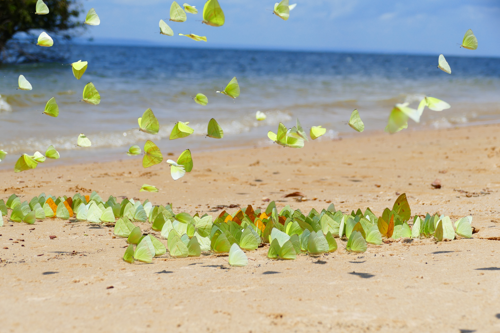

Facts About the Brazilian Amazon

Some Facts about history and nature along the Amazon River:
- The river is over 4,000 miles, "equivalent of the distance from New York to Rome."
- The Amazon Basin is the biggest lowland in Latin America, with 2.7 million square miles. Most of the river and its basin are within Brazil, and the river in Brazil is fairly deep (deeper than 150ft.).
- Floods are a normal part of life along the river, and are anticipated by the locals.
- It is "warm, rainy, and humid", with more change in temperature "between daytime and midnight...than between the warmest and coolest months". This means it is always warm, rainy, and humid.
- "More than 8,000 species of insects alone have been collected and classified" including "hundreds of species of brilliantly coloured butterflies; sometimes thousands of butterflies gather in the afternoon on riverside sandbanks.
- 
- Animals that live in the river include alligators, river turtles, manatee, river dolphins, and semiaquatic capybara.

- European conquest occurred in the mid-to-late 1500s. Before this, the river and its tributaries "supported relatively dense, sedentary populations of indigenous peoples who practiced intensive root-crop farming, supplemented by fishing and by hunting aquatic mammals and reptiles."
- "By the early 21st century the [indigenous] population had dropped to fewer than 200,000, partly as a result of deforestation and commercial exploitation on their lands." The indigenous Amazon population pioneered things like quinine to combat malaria, extracting cocaine (medicinal), and navigating the waters. They also "invented the blowgun and the hammock."
- The European colonizers, as is their pattern, took food and canoes from the indigenous people they met and enslaved them (especially prevalent from the 16th to 18th century). Many others died due to influenza, measles, smallpox, and other diseases brought by their invaders.
- By the late 20th century, "the increasingly effective control of malaria, improved diets and sanitation, and the greater ease of transportation had made the Amazon basin more attractive for human settlement."
The Amazon rainforest is in peril. According to the World Bank in a report from this year (2025), it is "close to a tipping point beyond which it may not generate enough rainfall to sustain its own ecosystem, as well as its agriculture, hydropower, water supply, and industries that have fueled Brazil's growth, nor the environmental services it provides to the entire world." Brittanica (above) states that organisms that populate the rainforest are "threatened by continuing deforestation" and that "at stake is the survival of many of the region's indigenous peoples, who have become integrated into the ecosystem of the rainforest and who have acquired significant knowledge on the beneficial nature of its resources."